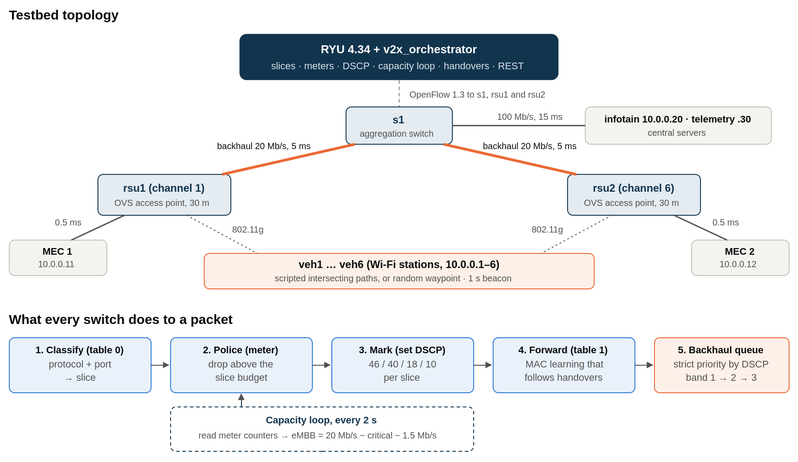
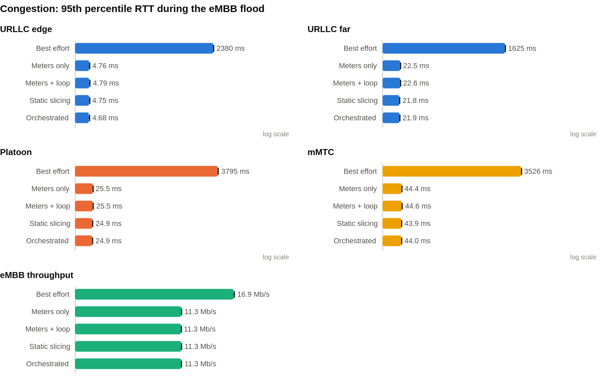
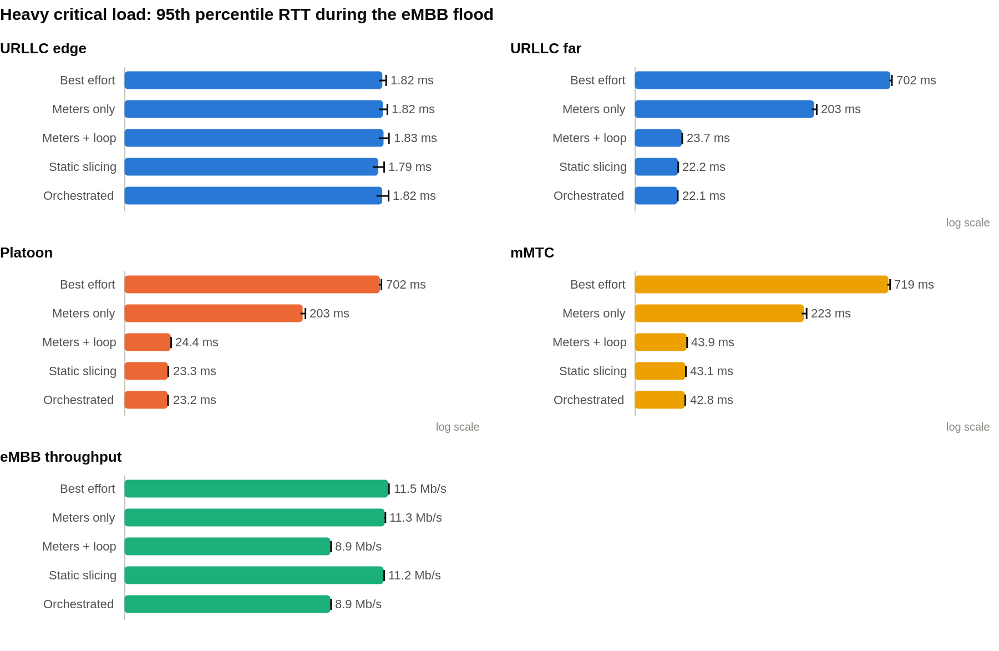
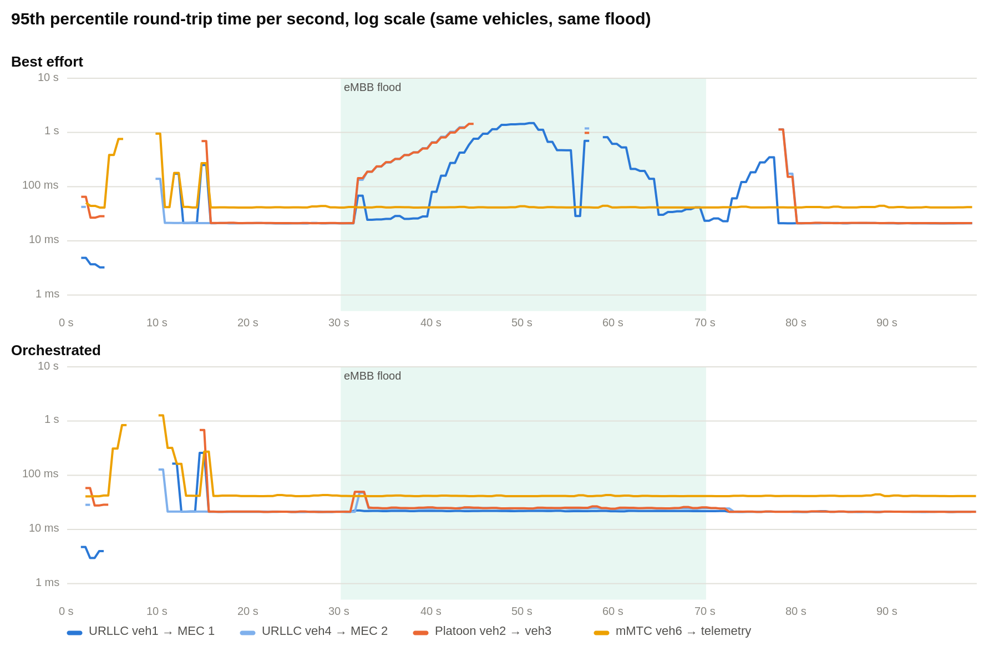
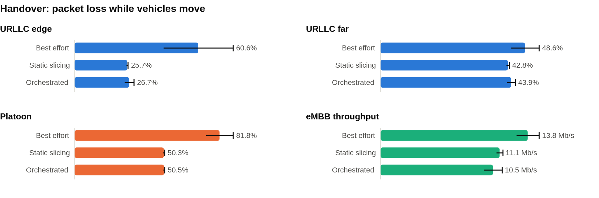

V2X Slicing: Project Explanation | Page
Project explanation for the evaluation · A. Adharsh, Rishabh Bhat, Samuel Gerald · 6 November 2026
Mininet-WiFi + RYU 4.34 (OpenFlow 1.3) + Open vSwitch, in Docker on Ubuntu 24.04
The problem. Connected vehicles share one roadside network between very different kinds of traffic. A collision warning must arrive within milliseconds; a passenger's video stream just wants as much bandwidth as it can get. When the shared backhaul link fills up, plain best-effort networking delays both equally, so the safety message waits behind the video.
What we built. An emulated V2X network of six moving vehicles, two roadside units (RSUs) with edge (MEC) servers, a 20 Mb/s backhaul and central servers, all controlled by an SDN controller application we wrote, the orchestrator. It splits traffic into five slices and gives each one guaranteed treatment:
How we tested it. A fully scripted benchmark: 5 configurations (from no slicing to the full system) × 4 scenarios (congestion, heavy critical load, handover, random mobility) × 5 repeats = 80 trials, each measuring per-packet delay, jitter, loss and delivery gaps on every slice.
| Headline result (95th percentile round-trip time during an eMBB flood) | Best effort | Full system | Improvement |
|---|---|---|---|
| Platoon (vehicle-to-vehicle) traffic, congestion | 3.8 s, 7.7 % loss | 24.9 ms, 0 % loss | about 150× |
| URLLC safety traffic to the edge server, congestion | 2.4 s | 4.7 ms | about 500× |
| Platoon traffic, heavy critical load | 702 ms | 23.2 ms | about 30× |
| Same, with rate limiting only (no priority, no loop) | 203 ms: meters alone are not enough once critical traffic is heavy | ||
Every number in this document is a mean over 5 independent repeats; the spread between repeats is under 1 % for the parked scenarios.

Figure 1. Topology (top) and the processing every switch applies to a packet (bottom).
| Component | What it is and why |
|---|---|
| Mininet-WiFi + wmediumd | Emulates real Linux network stacks, Wi-Fi radios (mac80211_hwsim) and an interference/propagation model, so vehicles associate, lose signal and re-associate like real stations |
| Open vSwitch (3 switches) | rsu1 and rsu2 are Wi-Fi access points that are also OpenFlow switches; s1 aggregates them. All three run OpenFlow 1.3, which has the meters we need |
| RYU 4.34 + orchestrator | RYU is the SDN controller framework. Our orchestrator (controller/v2x_orchestrator.py) is a RYU application: it owns the slices, installs the rules and meters, runs the loop, tracks vehicles and serves a REST API on port 8081 |
| Edge (MEC) servers | One per RSU, 0.5 ms away. Safety traffic to the vehicle's own MEC never crosses the backhaul (measured 1.2 ms round trip, against 40.7 ms to the central servers) |
| Backhaul | 20 Mb/s, 5 ms each way, the bottleneck on purpose. Both ends carry a strict-priority queue tree (Section 3.4) |
| Vehicles | 6 Wi-Fi stations. Either scripted intersecting paths that force handovers between the RSUs, or random waypoint (2–4 m/s, seeded so runs repeat) |
| Slice | Use in V2X | Traffic | Meter | Budget | DSCP | Queue band |
|---|---|---|---|---|---|---|
| URLLC | Safety messages to the edge | UDP 5000 | 1 | 5 Mb/s | 46 (EF) | 1, highest |
| Platoon | Cooperative driving, vehicle to vehicle | UDP 9000 | 2 | 4 Mb/s | 40 (CS5) | 1, highest |
| eMBB | Infotainment downloads | TCP 8080 | 3 | 12 Mb/s, adjusted by the loop | 10 (AF11) | 3, lowest |
| mMTC | Vehicle telemetry | UDP 1883 (MQTT) | 4 | 1 Mb/s | 18 (AF21) | 2 |
| Best effort | Everything else | any | 5 | 2 Mb/s | 0 | 3, lowest |
When a switch connects, the orchestrator proactively installs one rule per slice and direction (matching the destination port and the source port, so replies are classified too). Each rule does three things: send the packet through the slice's meter, set its DSCP field, and continue to table 1. An OpenFlow meter is a token-bucket rate limiter inside the switch: packets above the slice budget are dropped. The functional tests show the meters are exact: a 10 Mb/s URLLC flood came out at 4.96 Mb/s (limit 5), mMTC 2 → 0.99 Mb/s, best effort 4 → 1.97 Mb/s, eMBB TCP 11.3 Mb/s (limit 12).
Table 1 learns which port each vehicle's address is behind. If a vehicle's address appears behind a different port, it has moved: the orchestrator logs a HANDOVER and deletes that vehicle's forwarding rules on every switch, so the next packets are forwarded towards its new RSU. Two further fixes were needed for this to work on Wi-Fi, both visible in the code:
Meters stop a slice from taking more than its share, but packets that are within budget still share one queue. Under heavy load a safety packet can still wait behind hundreds of video packets. So each end of both backhaul links gets a Linux queue tree:
HTB 20 Mbit/s (the link rate)
└─ prio, 3 bands, always serves band 1 before 2 before 3
├─ band 1: DSCP 46, 40 (URLLC, platoon) → netem 5 ms
├─ band 2: DSCP 18 (mMTC) → netem 5 ms
└─ band 3: everything else (eMBB, best effort) → netem 5 ms
The packet counters prove the marking works end to end: in a heavy-load trial about 61 MB went through band 1 when marking was on, and 0 bytes when it was off.
Every 2 seconds the orchestrator reads every meter's byte counter and computes each slice's rate on each switch. If the critical slices (URLLC + platoon) plus eMBB's budget would overflow the 20 Mb/s backhaul, it lowers eMBB's meter to what is left:
eMBB budget = 20 000 − critical load − 1 500 headroom (kb/s, 500 kb/s steps, never below 2 000)
It logs PROTECT_ON when it starts, ADJUST when the load changes, and PROTECT_OFF when critical traffic goes quiet and eMBB gets its full 12 Mb/s back. In every heavy-load trial this fired on all three switches (for example: critical 7.9 Mb/s → eMBB 10.5 Mb/s, then 8.6 Mb/s → 9.5 Mb/s, then back to 12 Mb/s). The REST API (GET /v2x/slices, PUT /v2x/slices/<name>, GET /v2x/events) lets an operator do the same by hand: setting URLLC to 3000 kb/s changed the meter immediately and the flow dropped to 2.98 Mb/s.
| Setup | Meters | Priority queues | Capacity loop | Question it answers |
|---|---|---|---|---|
| best_effort | – | – | – | What happens with no slicing at all? |
| meters_only | yes | – | – | Is isolation alone enough? |
| meters_loop | yes | – | yes | What does dynamic reallocation add? |
| static | yes | yes | – | What does strict priority add? |
| orchestrated | yes | yes | yes | The full system |
The comparison follows Saraiva et al. (best effort vs QoS-only vs full framework), split further so each mechanism's contribution can be seen.
| Scenario | What happens |
|---|---|
| congestion | Vehicles parked. Light critical traffic: URLLC to the own-RSU MEC and to the far MEC, and platoon across the RSUs, each 100 packets/s; mMTC 10 packets/s. Then a 30 s eMBB download (4 TCP streams) that alone could fill the backhaul |
| heavy | The same, but the far URLLC and platoon flows are raised to 4.3 and 3.5 Mb/s, so critical traffic plus eMBB's 12 Mb/s really exceeds the 20 Mb/s link. This is the case where meters alone fail |
| handover | Vehicles drive the scripted paths between the RSUs while the flows run. Measures loss and the longest delivery gap across handovers |
| random | Random waypoint mobility (seed = repeat number) together with the eMBB flood |
Each trial starts from a clean Mininet and controller, takes about 2 minutes, and records every probe packet (sequence number, send time, round trip), iperf3 throughput, controller events, meter counters and queue counters. experiments/analyze.py computes loss, throughput, RTT mean/95th/99th percentile, jitter and the longest gap per flow in three windows: idle (before the flood), load (during it) and moving (handover scenario), then averages over the 5 repeats.

Figure 2. Congestion scenario, 95th percentile RTT during the eMBB flood (log scale; mean of 5 repeats, whiskers one standard deviation).
Without slicing, eMBB's TCP streams fill the backhaul queue and every other flow waits behind them: platoon reaches 3.8 s with 7.7 % loss, mMTC 3.5 s with 9.8 % loss. With any slicing setup, eMBB is held to its 12 Mb/s budget (11.3 Mb/s measured, against 16.9 Mb/s unrestricted), the link never overflows, and critical flows stay at their idle delay plus about 3 ms with zero loss. Priority queues shave a little more (platoon 24.9 ms against 25.5 ms, jitter 1.5 against 1.7 ms).

Figure 3. Heavy scenario, 95th percentile RTT and eMBB throughput during the flood.
This is the key experiment. The slice budgets add up to more than the link (5 + 4 + 12 + 1 + 2 = 24 Mb/s on a 20 Mb/s link), as in any oversubscribed network. When critical traffic is high, meters alone let eMBB keep its full 12 Mb/s, the link overflows, and critical packets queue: 203 ms. Either of our two mechanisms fixes it:
The trade-off is visible in the eMBB panel: the loop costs eMBB about 2.3 Mb/s, priority alone does not. The loop's value is that it keeps the link from overflowing at all, so it does not depend on every switch having priority queues. In a real network the radio side, for instance, is not under our control.

Figure 4. The two dashboard recordings: identical vehicles, paths and flood (green band), best effort (top) against the full system (bottom).
The early spikes (0–16 s) are the vehicles driving through the handovers, the same in both runs. During the flood, best effort pushes platoon and URLLC towards 1 s; with the orchestrator they stay flat at about 22 ms.

Figure 5. Handover scenario, packet loss while the vehicles move (the eMBB download runs at the same time).
Slicing roughly halves the loss during mobility (platoon 82 % → 50 %, URLLC edge 61 % → 26 %), because with best effort the moving vehicles' traffic also queues behind eMBB. But every setup still shows one gap of 7–14 s per handover. We traced this: Mininet-WiFi reports the new association within a second, but the first packet reaches the new RSU's switch 6–10 s later, which is also when the controller logs the HANDOVER. The delay is the emulated station's scan and re-association between two RSUs on different channels, before any packet reaches OpenFlow. The orchestrator cannot shorten it, so we report it as a limitation of the emulation rather than of the slicing (Section 7).
Under random mobility the slicing setups again lose less than best effort (platoon 19–22 % against 47 %; mMTC 22–26 % against 59 %), but the spread between seeds is as large as the mean. That is because how long a vehicle spends re-associating depends entirely on its random path. We show these runs (and the dashboard recordings) to demonstrate that the system works under unscripted mobility, not as precise measurements.
Start it with python3 ~/v2x-project/dashboard/server.py and open http://127.0.0.1:8090. It needs no sudo, Docker or internet, because it replays recordings made on the testbed.
| Tab | What it shows |
|---|---|
| Run | A map of the RSUs (with range circles), the backhaul, MEC servers and the six vehicles moving, a dashed line to the RSU each is attached to and a ring at every handover. Four headline tiles (worst URLLC delay, platoon loss, eMBB at s1, orchestrator state). The RTT chart per flow, a second chart for a "compare with" recording, each slice's throughput and the eMBB limit through any switch, bullet bars of each slice's traffic against its meter limit, the controller's event list (click to jump) and a table view |
| Experiment results | The 5-repeat results for any scenario, window and measure, as bars with standard deviation and as a table |
| How it works | Architecture, slices, packet path, the loop and the setups, for explaining the system |
Direct links open a chosen moment, e.g. /?rec=scripted_best_effort&cmp=scripted_orchestrated&t=55 or /?view=results&scenario=heavy. For a live demo, run sudo bash scripts/run_live_demo_host.sh orchestrated 30 and pick "Live testbed".
s1: eMBB is held at its 12 Mb/s line, URLLC and platoon are untouched. Click the HANDOVER events to jump to them.| Claim | Status | Accurate wording |
|---|---|---|
| Emulation-scale V2X slicing | True | Five slices on a Mininet-WiFi testbed with 6 vehicles, 2 RSUs, MEC and central servers |
| Dynamic reallocation | True | Capacity-aware loop on measured meter counters every 2 s, plus a REST API for manual resizing |
| Standardised benchmarking | True | Scripted benchmark: 5 setups × 4 scenarios × 5 repeats, fixed flows, automatic analysis |
| "Random waypoint / road-constrained mobility" | Partly | Random waypoint (seeded) and scripted intersecting paths. No road network (no SUMO) |
| "Maps traffic flows to appropriate OVS queues and OpenFlow meters for strict priority scheduling" | Reworded | OpenFlow meters police each slice; the controller sets DSCP; strict-priority Linux queues on the backhaul links schedule by DSCP. They are Linux prio queues, not OVS queues |
| "UDP 5000 directly to the highest priority URLLC queue (Queue 0)" | Inaccurate | There is no OVS queue 0 for URLLC. UDP 5000 → meter 1 (5 Mb/s) → DSCP 46 → band 1 of the backhaul priority queue |
Contributions. (1) An OpenFlow 1.3 orchestrator that classifies V2X traffic into URLLC, platoon, eMBB, mMTC and best-effort slices, polices each with a meter and marks it for strict-priority backhaul queues. (2) A capacity-aware control loop that reallocates eMBB bandwidth every 2 s from measured meter counters, plus a REST interface for slice resizing. (3) Mobility-aware forwarding that detects handovers and re-routes traffic, with RSU settings that make cross-RSU communication reliable. (4) A reproducible benchmark comparing five configurations over four scenarios with five repeats, and a dashboard that visualises vehicles, slices and latency.
Result. Under congestion the orchestrator keeps critical round-trip times at 5–25 ms against 2.4–3.8 s for best effort, with zero loss. Under heavy critical load, rate limiting alone gives 203 ms; adding either the capacity loop or strict priority brings it to about 23 ms.
Future work. Shorten the handover outage and re-measure mobility; steer vehicles to the nearest MEC after handover; SUMO road mobility; larger topologies; making the loop count traffic after policing.
| Question | Answer |
|---|---|
| What is the difference between RYU and your orchestrator? | RYU is the controller framework: it speaks OpenFlow to the switches. The orchestrator is our application on top of it that decides what to install: slice rules, meters, DSCP marks, the loop, handover handling and the REST API. |
| Why meters and priority queues, not one of them? | They do different jobs. Meters cap each slice so nothing can starve the rest. Priority decides who waits when the link is full. The heavy scenario shows meters alone are not enough (203 ms against about 23 ms). |
| Why is the loop useful if priority already works? | Priority only works where you control the queue. The loop prevents the overload in the first place, network-wide, using measurements. It costs eMBB about 2 Mb/s while critical traffic is high and gives it back automatically. |
| Why are the queues Linux tc, not OVS queues? | OVS queues on a Linux datapath are themselves built on tc and would have wiped the link's delay and rate emulation. Building the tree directly keeps the 20 Mb/s, 5 ms backhaul and adds strict priority under it. |
| Why is loss so high during handover? | The emulated stations take 6–10 s to re-associate with the other RSU, before any packet reaches the network. It is the same in every setup, so it does not affect the comparison; slicing still halves the loss around it. |
| How do you know the results are reliable? | Each trial starts from a clean testbed, every configuration is repeated 5 times, and the spread is under 1 % for the parked scenarios. All raw logs are kept in logs/step2. |
| Where is the edge-computing benefit? | Safety traffic to the vehicle's own RSU's MEC: 1.2 ms round trip, against 21 ms to the other RSU's MEC and 41 ms to the central servers. |
sudo bash ~/v2x-project/scripts/run_all_host.sh 5 # functional tests, checks, recordings, 80 trials (about 3.5 h) python3 ~/v2x-project/experiments/analyze.py logs/step2 # tables: logs/step2/summary.md, results.json python3 experiments/figures.py logs/step2/results.json docs/figures python3 experiments/run_figures.py dashboard/recordings docs/figures python3 ~/v2x-project/dashboard/server.py # http://127.0.0.1:8090
Setup of the machine and images: docs/Environment_Setup_Guide_Part3.pdf. Detailed status and history: docs/V2X_HANDOFF_v2.md. Main references: Saraiva et al., IEEE T-ITS 22(8), 2021; Shah et al., IEEE TCE 71(1), 2025; Ahmad, Gul & Derawi, Sensors 26(13), 2026; Campolo et al., Sensors, 2018.